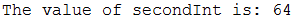

In Java there is something called a variable which is a memory location that stores a value. There are different types of data that can be stored in a variable. These come in two forms, Primitive Data Types and Object Data Types.
In Java, there are 8 primitive data types:
boolean – which stores 1 bit of data. Either true or false.
char – which stores one 16 bit character.
float – which stores a 32 bit real number.
double – which stores a 64 bit real number.
byte – which stores an 8 bit integer.
short – which stores a 16 bit integer.
int – which stores a 32 bit integer.
long – which stores a 64 bit integer.
Variable declaration is when you state the name of the variable along with its data type.
boolean boolTest; char charTest; float floatTest; double doubleTest; byte byteTest; short shortTest; int intTest; long longTest;
Variable instantiation is when you state the name, datatype and value to be stored in the variable.
boolean boolTest=true; char charTest='A'; float floatTest=0.5f; double doubleTest=5.234234234d; byte byteTest=64; short shortTest=3425; int intTest=234234; long longTest=1231231;
Variable literals are variables which are instantiated with a fixed value from the beginning.
The opposite of a variable being instantiated as a literal would be an example such as this:
int firstInt=64; int secondInt=firstInt;
This is an example of a variable being instantiated with the value of another variable. The difference is that the value of the first variable can ‘vary’ before the second is created and so it is a more dynamic method of instantiating variables.
System.out.println("The value of secondInt is: "+secondInt);
To confirm it, when printing the value held in the secondInt variable, the result will be the value stored in firstInt:
There is a data type for a sequence of characters called a String and in Java it is represented as an object.
String declaration
String stringTest;
String Instantiation with literal
String stringTest="Hello World!";
As Strings are objects, they are provided with numerous methods that can do really useful things. Here are some examples and their outputs:
String stringTest="Hello World!"; System.out.println(stringTest.length());
String stringTest="Hello "; String stringTest2="World!"; System.out.println(stringTest.equals(stringTest2));
String stringTest="Hello "; String stringTest2="Hello "; System.out.println(stringTest.equals(stringTest2));
String stringTest="Hello "; String stringTest2="World!"; System.out.println(stringTest.concat(stringTest2));
String stringTest="Hello "; String stringTest2="World!"; System.out.println(stringTest2.concat(stringTest));
Local variables – These are variable that are created inside methods and are removed when the method is exited.
public class FirstProgram{
public static void main(String args[]){
printHelloWorld();
}
public static void printHelloWorld(){
String helloWorld="Hello World!";
System.out.println(helloWorld);
}
}
In method printHelloWorld(), there is a variable created there called helloWorld. This variable disappears after this method is executed and exited.
Instance variable – These are variables that are created outside methods but inside a class.
public class FirstProgram{
String helloWorld="Hello World!";
public void doSomething(){
...
}
}
Static variables – These are variables that are similar to instance variables as they are created outside methods. However, there can only be one static variable for a class. This means that no matter the number of objects created, they all share this same static variable. Also they are hardly used except as constants.
public class FirstProgram{
static int classVariable=123;
public void doSomething(){
...
}
}